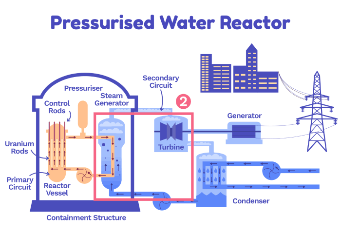
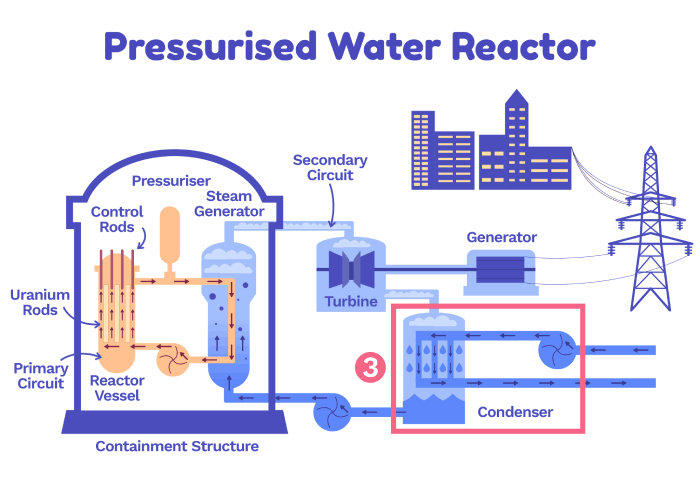

Why Nuclear Energy?
To Educate Our Society about Nuclear Technology
The number of neutrons that are able to go on and cause a split must be continuously regulated in order to control the chain reaction. This is done by moving control rods made of substances that absorb neutrons, in and out of the reactor core. At the same time, to maintain a stable chain reaction we need to be able to rely on the likelihood that a neutron will collide with a U-235 nucleus. There are two ways that this is done: enrichment and moderation.
- Enrichment: Uranium found in nature is, on average, only 0.7% U-235. Uranium rods inside of nuclear reactors need to contain around 4-5% U-235, so the Uranium is ‘enriched’ to increase the percentage of U-235.
- Moderation: Neutrons that come from a U-235 split are often moving too fast to split another U-235 nucleus. To slow the neutron down and increase the likelihood of a split, a material called a moderator is added. Most nuclear reactors use water as their moderator, but other options are being considered too (more on this in the next chapter)!
So together, the moderator and the control rods stabilise and control the reaction from the enriched fuel rods.
The moderator and the control rods stabilise and control the nuclear chain reaction
Remember that each time a U-235 atom splits, heat is released? Nuclear reactors use this heat to create steam. This steam then makes turbines spin which powers a generator - just like in a fossil fuel power station!
The most common type of nuclear reactor is the Pressurised Water Reactors (PWR) which contains two water loops. The first, called the primary circuit, absorbs the heat from the fission of U-235.
This hot water then runs through a pipe that goes through a separate loop of water.
The steam created from boiling this second loop of water is then used to spin a turbine. This last part of the process is just like a coal plant.
3. Is nuclear power safe?
4. Both of the above are problems, so let’s break them down.
Per unit of electricity generated, does nuclear power cause more or fewer deaths than coal?
In fact, nuclear accidents are extremely unlikely and altogether cause far fewer deaths than fossil fuels (mainly because burning fossil fuels releases deadly air pollution).
Natural uranium is made up of around 99.3% U-238 and 0.7% U-235. But, we need the uranium rods in reactors to contain 4-5% U-235. When creating this enriched fuel, we leave a large amount of U-238 behind.
What if we could recycle this waste and use it to make more energy?
Travelling Wave Reactors (TWR) are designed to use depleted Uranium-238 as fuel. TWRs are a type of fast reactor, which means that they don’t have to use a moderator to slow neutrons down, as discussed in the last chapter. The fast neutrons are not very good at initiating fission in the U-235, but U-238 can absorb them.
The key idea behind these reactors is that they make their own fuel. This can look as follows:
U-238 can’t power normal nuclear reactors but in a TWR reactor the neutrons are moving quickly which means U-238 can absorb one. The U-238 turns into U-239 which then decays, eventually forming an isotope of plutonium (P-239). P-239, like U-235, can undergo fission, split and release lots of energy. This is what then powers the nuclear fission reactions and creates the heat that ultimately becomes the energy we get out of the reactor. All of this happens within the reactor!
TWRs produce 80% less radioactive waste per unit of energy produced (by mass) than conventional reactors and could in principle recycle spent nuclear fuel, but significant research advances are needed for that.
Work on TWRs has been ongoing for decades, mostly unsuccessfully. But progress has been made in recent years.
5. Do you remember what percentage of natural uranium is U-235?